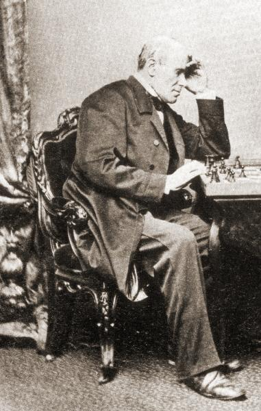
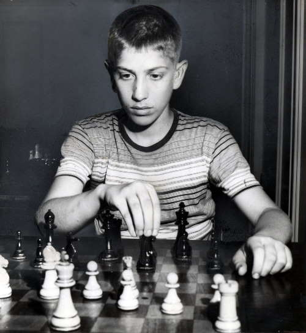
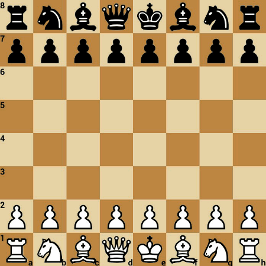
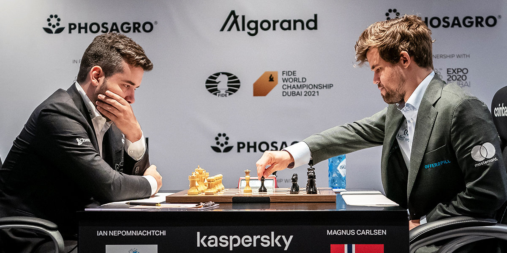

Легендарные партии: шедевры за доской
Сражения, которые изменили шахматы и вошли в историю.
Введение
В шахматах есть партии, которые называют «бессмертными». Это не просто выигранные или проигранные матчи. Это произведения искусства, где сочетаются глубокая стратегия, невероятная интуиция и готовность идти на риск. Мы собрали пять партий, которые каждый шахматист должен знать в лицо — от дерзких атак XIX века до современного интеллектуального марафона.
1. «Бессмертная партия» (1851)
Адольф Андерсен против Лионеля Кизерицкого
Этот матч — гимн романтизму в шахматах. Играя в Лондоне, Андерсен пожертвовал ферзя, обе ладьи и слона, чтобы поставить мат. В те времена красота комбинации ценилась выше позиционного преимущества. Партия стала символом эпохи, когда шахматисты играли «на публику» и не боялись жертвовать всем ради атаки.

2. «Оперная партия» (1858)
Пол Морфи против герцога Брауншвейгского и графа Изуара
Американский гений Пол Морфи сыграл эту партию в Парижской опере во время антракта. Его соперниками были знатные аристократы-любители. Морфи, который был на голову выше их по классу, разыграл партию как по нотам. Он быстро развил фигуры и закончил игру блестящей жертвой ферзя на 17-м ходу. Партия стала учебником по быстрому развитию и мобилизации сил.
3. «Партия века» (1956)
Дональд Бирн против Роберта Фишера
Эта партия сделала 13-летнего Роберта Фишера знаменитым. Играя черными против опытного гроссмейстера Дональда Бирна, юный Фишер провел одну из самых знаменитых комбинаций в истории. Он пожертвовал ферзя за несколько ходов до мата, показав, что вундеркинд из Бруклина уже готов сражаться с сильнейшими. Партия была названа «Партией века».

4. «Жемчужина Каспарова»* (1999)
Гарри Каспаров* против Веселина Топалова
Современная классика. В турнире в Вейк-ан-Зее Каспаров* провел уникальную комбинацию, начавшуюся с жертвы ладьи. Вся партия — это непрерывное наращивание инициативы. Многие аналитики называют её величайшей партией в карьере Каспарова* и одной из лучших в истории шахмат XX века. Она доказала, что даже в эпоху компьютеров возможны глубокие интуитивные жертвы.

5. Марафон в Дубае (2021)
Магнус Карлсен против Яна Непомнящего
Шестая партия матча за звание чемпиона мира в Дубае вошла в историю как самая длинная в истории чемпионатов мира. Она длилась 136 ходов и более 7 часов 45 минут. Карлсен методично давил на соперника в эндшпиле, заставив его ошибиться в цейтноте. Эта партия показала, что современные шахматы — это не только блестящие атаки, но и выносливость, психология и физическая подготовка.

Интересные факты о партиях
- В «Бессмертной партии» Андерсен отдал сопернику ферзя и обе ладьи, оставшись с одними легкими фигурами.
- Пол Морфи выиграл «Оперную партию» всего за 17 ходов, играя в антракте.
- Когда 13-летний Фишер пожертвовал ферзя в партии с Бирном, зрители сначала решили, что он просто зевнул фигуру.
- Шестая партия Карлсена и Непомнящего в 2021 году побила рекорд по продолжительности: 136 ходов.
Что дальше?
♟ Правила игры — если хочешь разобраться, как работают такие комбинации
👤 Великие шахматисты — биографии авторов этих партий
🔗 Полезные ресурсы — где найти полный разбор этих партий
* Примечание: Нам необъходимо выполнить требование российского законодательства: Гарри Каспаров* после завершения спортивной карьеры занимается политической деятельностью. Внесен Минюстом РФ в реестр иностранных агентов, а Росфинмониторингом — в перечень террористов и экстремистов.